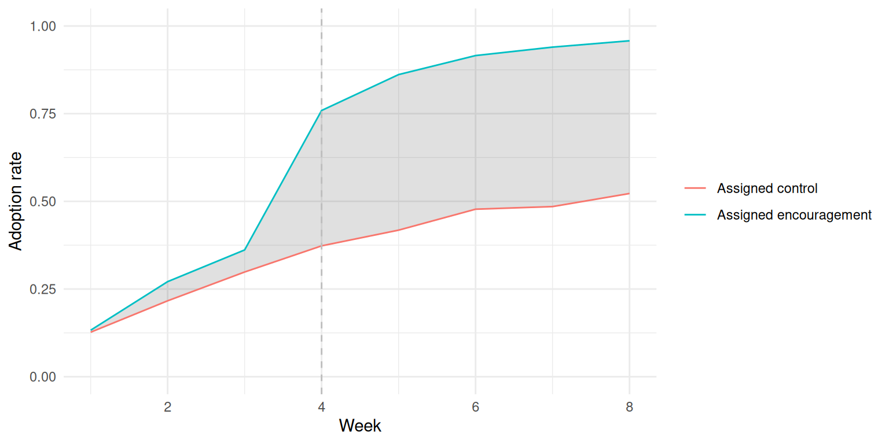
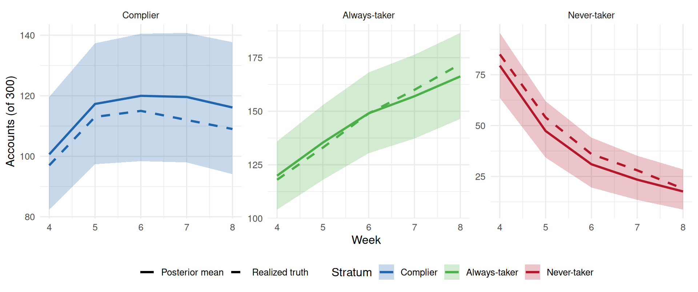
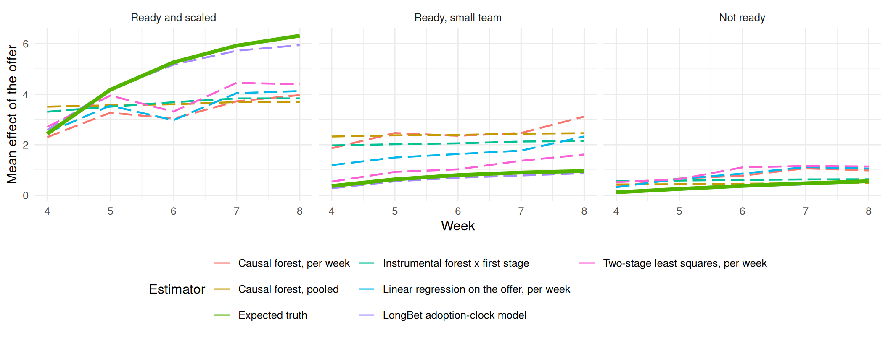
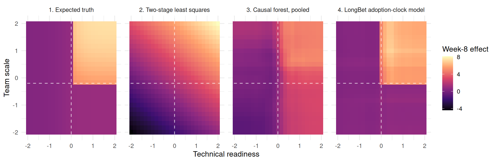
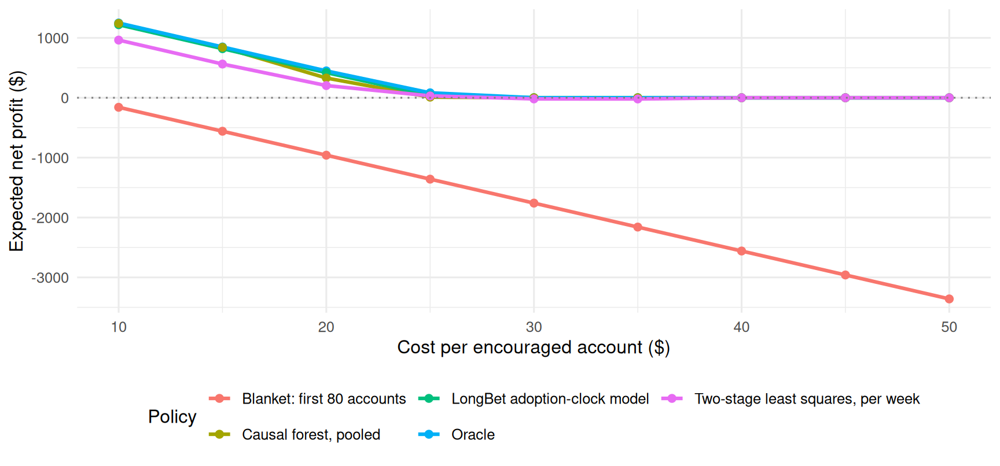
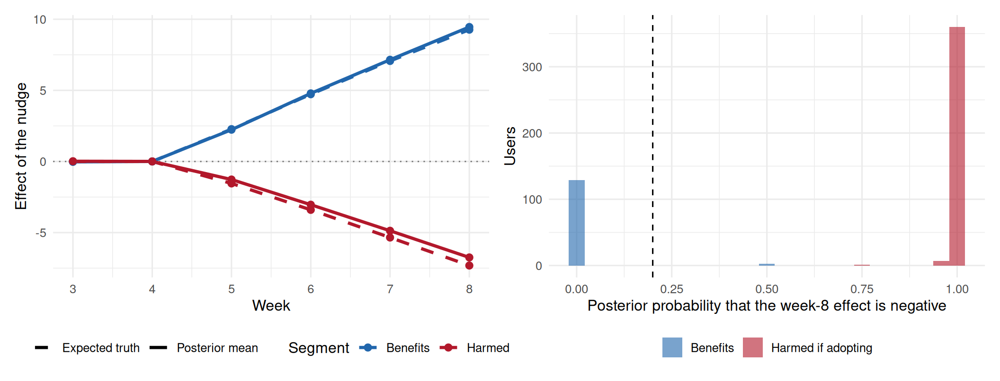

library(longbet)
library(dplyr)
library(tidyr)
library(tibble)
library(ggplot2)
library(purrr)
library(knitr)
source("R/longbet-common.R")
source("R/longbet-sim.R")
source("R/longbet-artifacts.R")
verify_longbet_environment()
theme_set(theme_minimal(base_size = 12))
cost <- 20; capacity <- 80; budget <- 1600
enc_budget <- c(lb_budget(12), list(random_seed = 123L))30 LongBet: Randomized Encouragement and Adoption Timing
NoteBuilds on the LongBet sequence
This chapter uses the panel model of LongBet: Dynamic Treatment Effects in Staggered Rollouts and the decision framing of LongBet: From Effects to Decisions. It extends the randomized encouragement design of the earlier instrumental-variables chapter to a panel, where adoption happens at different times and the benefit depends on how long the feature has been in use.
30.1 The Decision: Who Should Be Encouraged?
A company cannot force enterprise accounts to adopt a workflow automation feature, but it can offer high-touch concierge onboarding to a random subset and watch what happens. That is a randomized encouragement design, and in a panel it acquires a time dimension: accounts adopt in different weeks, and the benefit compounds with the weeks the feature has been in use.
A platform runs an onboarding pilot on 300 accounts over eight weeks. At week 4, a random half is offered concierge onboarding; the rest get standard documentation. Accounts choose whether and when to activate, and activation is permanent. The pilot is over, and the decision is forward-looking:
For the next cohort of 500 accounts, concierge onboarding costs $20 per account in specialist hours. The onboarding team can handle at most 80 accounts and the budget is $1,600. Which accounts should get the offer?
Target the effect of the offer, not the effect of adoption
The intervention being allocated is the offer, so the quantity the decision needs is the conditional effect of being offered onboarding on the outcome,
\[ \mathrm{CITT}_Y(X, t) = \mathbb{E}\left[Y_{it}(Z_i = 1) - Y_{it}(Z_i = 0) \mid X_i = X\right], \]
summed over the weeks that matter and compared with the cost. The complier average causal effect, the ratio of the outcome effect to the adoption effect, answers a different question: what adoption does for the accounts it moves. It is the right quantity for pricing the feature and the wrong one for allocating the offer, for three reasons. The specialist hours are spent whenever the offer goes out, whether or not the account adopts. A segment can have a large complier effect and almost no compliance, so its expected lift per offer is small. And a ratio with a small denominator is heavy-tailed, so ranking on it puts the least compliant, least informative accounts at the top.
30.2 How the Model Works
longbet_encourage() fits two LongBet equations and composes them. The exclusion restriction is written into the structure: the offer enters the outcome only through adoption.
The outcome, on the adoption clock. With \(S^D_{it}\) the weeks since account \(i\) activated,
\[ Y_{it} = \mu_Y(X_i, t) + \beta^{Y}_{S^D_{it}}\, \nu_Y(X_i, t)\, \mathbf{1}\{S^D_{it} \ge 1\} + \gamma^{Y}_i + \epsilon^{Y}_{it}. \]
This is the model of the first chapter with adoption as the treatment, so the equation contains the jump that activation causes and how the benefit grows with exposure. Accounts in both arms contribute activation events, because control accounts adopt organically too.
Adoption, as a hazard on the offer clock. With \(S^Z_{it}\) the weeks since the offer, the probability of activating this week given that the account has not yet activated is
\[ \lambda_{it} = \Phi\!\Big(\mu_D(X_i, t) + \beta^{D}_{S^Z_{it}}\, \nu_D(X_i, t)\, \mathbf{1}\{S^Z_{it} \ge 1\} + \eta_i\Big), \]
a binary LongBet on the first-activation indicator with cells after activation masked out. The account-level term \(\eta_i\) is a frailty: it carries unobserved differences in the propensity to adopt.
Composition. Under an offer schedule, the hazard gives the probability of activating first in week \(a\) and of having activated by week \(t\). The offer’s effects follow:
\[ \mathrm{CITT}_Y(X_i, t) = \sum_{a \le t} \big[\pi_a(X_i, 1) - \pi_a(X_i, 0)\big]\, \tau_t(X_i, t - a + 1), \qquad \mathrm{CITT}_D(X_i, t) = P_t(X_i, 1) - P_t(X_i, 0), \]
evaluated draw by draw, with the frailty integrated outside the survival product by Gauss-Hermite quadrature. That composition is what handles the awkward case a snapshot cannot: an account that would have adopted organically in week 7 and adopts in week 4 because of the offer has the same adoption status by week 8 in both arms, and four extra weeks of exposure. The adoption contrast at week 8 misses it entirely; the outcome effect does not.
predict_conditional() returns, for any covariate profile and every week, posterior draws of both effects, the principal strata under monotonicity, the complier effect as a draw-wise ratio, the cumulative lift, the probability that the cumulative lift beats a cost, and a knapsack allocation under capacity and budget constraints.
30.3 A Pilot With a Known Answer
The simulation is built so the expected effect of the offer is available in closed form for every account and week, which is the right benchmark for an estimator of a conditional expectation.
Each account has a weekly adoption hazard. Under control it is organic, and higher for accounts in a latent operational distress state that also lowers their baseline productivity, which is the confounder that makes naive regressions fail. Once offered, the hazard rises smoothly with technical readiness. The productivity benefit compounds with exposure, \(\tau_i(S) = \tau_i\log(1+S)\), and only accounts with both technical readiness and adequate team scale get a large coefficient. Accounts that are ready but small comply eagerly and gain little: they are the segment a compliance-driven ranking gets wrong.
train_data <- generate_encouragement_data(n = 300, seed = 2026)
test_data <- generate_encouragement_data(n = 500, seed = 9999)
tt <- train_data$tt; t_enc <- train_data$t_enc; t_grid <- seq_len(tt)
post_weeks <- t_enc:tt; H <- length(post_weeks)
stopifnot(all(train_data$d1 >= train_data$d0),
all(train_data$true_citt_y[, seq_len(t_enc - 1)] == 0))
segment_of <- function(dat) factor(
ifelse(dat$qualifying, "Ready and scaled",
ifelse(dat$x[, "x1"] > 0, "Ready, small team", "Not ready")),
levels = c("Ready and scaled", "Ready, small team", "Not ready"))
test_segment <- segment_of(test_data)
true_cum_test <- rowSums(test_data$true_citt_y[, post_weeks])
tibble(Segment = test_segment, lift = true_cum_test,
comp = test_data$true_citt_d[, tt], prof = true_cum_test > cost) %>%
group_by(Segment) %>%
summarise(Accounts = n(), `Week-8 compliance` = mean(comp),
`Expected cumulative lift` = mean(lift), `Share worth encouraging` = mean(prof)) %>%
kable(digits = c(0, 0, 2, 1, 2),
caption = "The future cohort. Compliance is the expected adoption contrast at week 8; an account is worth encouraging when its expected cumulative lift over weeks 4 to 8 exceeds the $20 cost.")| Segment | Accounts | Week-8 compliance | Expected cumulative lift | Share worth encouraging |
|---|---|---|---|---|
| Ready and scaled | 132 | 0.41 | 24.1 | 0.96 |
| Ready, small team | 97 | 0.41 | 3.6 | 0.00 |
| Not ready | 271 | 0.29 | 1.8 | 0.00 |
Only the ready-and-scaled segment is worth encouraging at this cost, and the ready-but-small segment complies just as eagerly. With 127 profitable accounts and capacity for 80, the constraint binds.
plot_encouragement(train_data$z, train_data$d, t_grid) + labs(title = NULL, x = "Week")
30.4 Start With What Randomization Alone Identifies
Before any model, the package computes the assigned-arm contrasts: the outcome and adoption effects at each week with their standard errors. This needs no model and is the inference of record for the population effects.
ref <- encouragement_effects(train_data$y, train_data$d, train_data$z, t_grid)
truth_train <- tibble(period = post_weeks,
true_itt_y = colMeans(train_data$true_citt_y[, post_weeks]),
true_itt_d = colMeans(train_data$true_citt_d[, post_weeks]))30.5 Fitting the Model
enc_run <- lb_artifact(
"encouragement_fit",
lb_key("encouragement", enc_budget, digest::digest(list(train_data[c("y", "d", "z", "x")], test_data$x))),
export = c("train_data", "test_data", "t_grid", "enc_budget", "cost", "capacity", "budget", "tt", "t_enc"),
builder = function() {
fit <- longbet_encourage(y = train_data$y, d = train_data$d, z = train_data$z,
x = train_data$x, t = t_grid, config = enc_budget)
pop <- predict(fit, min_ess = 400, max_rhat = 1.01)
cond_train <- predict_conditional(fit)
cond_test <- predict_conditional(fit, new_x = test_data$x, cost = cost,
capacity = capacity, budget = budget)
grid_seq <- seq(-2, 2, length.out = 25)
grid_x <- as.matrix(expand.grid(x1 = grid_seq, x2 = grid_seq, x3 = 0))
list(effects = pop$effects, diagnostics = pop$diagnostics, reference = pop$reference,
itt_draws = pop$draws$itt_y, strata = principal_strata(cond_train),
citt_y = cond_test$citt_y$mean, citt_d = cond_test$citt_d$mean,
cumulative = cond_test$cumulative_lift$mean, decision = cond_test$decision,
hurdle = knapsack_policy(cond_test, cost = cost, capacity = capacity,
budget = budget, hurdle = 0.8),
certainty = knapsack_policy(cond_test, cost = cost, capacity = capacity,
budget = budget, ranking_metric = "certainty_adjusted"),
grid_x = grid_x,
grid_effect = predict_conditional(fit, new_x = grid_x)$citt_y$mean[, tt - t_enc + 1])
})The fit uses four chains, 2,000 burn-in sweeps and 12,000 further sweeps per chain with every twelfth retained, for both equations.
diag_tbl <- enc_run$diagnostics %>% filter(group == "all") %>%
mutate(Quantity = recode(quantity, itt_y = "Effect on the outcome", itt_d = "Effect on adoption",
wald = "Complier effect")) %>%
select(Week = period, Quantity, `Bulk ESS` = ess_bulk, `Tail ESS` = ess_tail,
`Rank R-hat` = rhat, Passed = diagnostics_passed) %>%
arrange(Quantity, Week)
kable(diag_tbl, digits = c(0, 0, 0, 0, 3, 0),
caption = "Convergence diagnostics for exactly the quantities reported below.")| Week | Quantity | Bulk ESS | Tail ESS | Rank R-hat | Passed |
|---|---|---|---|---|---|
| 4 | Complier effect | 1600 | 2920 | 1.003 | TRUE |
| 5 | Complier effect | 1403 | 3202 | 1.002 | TRUE |
| 6 | Complier effect | 1809 | 3378 | 1.004 | TRUE |
| 7 | Complier effect | 1682 | 3188 | 1.002 | TRUE |
| 8 | Complier effect | 1666 | 2983 | 1.001 | TRUE |
| 4 | Effect on adoption | 3344 | 3286 | 1.000 | TRUE |
| 5 | Effect on adoption | 3184 | 3895 | 1.000 | TRUE |
| 6 | Effect on adoption | 2850 | 3884 | 1.000 | TRUE |
| 7 | Effect on adoption | 2813 | 3643 | 1.000 | TRUE |
| 8 | Effect on adoption | 2866 | 3701 | 1.000 | TRUE |
| 4 | Effect on the outcome | 2246 | 3507 | 1.005 | TRUE |
| 5 | Effect on the outcome | 1585 | 3226 | 1.002 | TRUE |
| 6 | Effect on the outcome | 1957 | 3698 | 1.002 | TRUE |
| 7 | Effect on the outcome | 1993 | 3486 | 1.002 | TRUE |
| 8 | Effect on the outcome | 2182 | 3328 | 1.002 | TRUE |
15 of 15 reported quantities pass both thresholds; the smallest bulk effective sample size is 1403 and the largest R-hat is 1.005.
Two features of this panel make it comfortable for the sampler, and they are worth recognising in your own data. The outcome equation sees the activation jump it is built to represent, so its residual is close to the noise the model assumes. And the adoption equation is a probit on the at-risk set with a few hundred events, which is a small, well-conditioned problem.
eff <- enc_run$effects %>% filter(group == "all", quantity %in% c("itt_y", "itt_d")) %>%
select(period, quantity, posterior_mean, posterior_lower, posterior_upper)
ref_long <- ref %>% select(period, itt_y, itt_d, itt_y_se, itt_d_se) %>%
pivot_longer(c(itt_y, itt_d), names_to = "quantity", values_to = "reference") %>%
mutate(reference_se = ifelse(quantity == "itt_y", itt_y_se, itt_d_se)) %>%
select(period, quantity, reference, reference_se)
truth_long <- truth_train %>% transmute(period, itt_y = true_itt_y, itt_d = true_itt_d) %>%
pivot_longer(c(itt_y, itt_d), names_to = "quantity", values_to = "truth")
eff %>% left_join(ref_long, by = c("period", "quantity")) %>%
left_join(truth_long, by = c("period", "quantity")) %>%
mutate(quantity = factor(quantity, levels = c("itt_y", "itt_d"),
labels = c("Effect on the outcome", "Effect on adoption"))) %>%
arrange(quantity, period) %>%
transmute(Quantity = quantity, Week = period, `Expected truth` = sprintf("%.3f", truth),
`Design-based reference (SE)` = sprintf("%.3f (%.3f)", reference, reference_se),
`Posterior mean` = sprintf("%.3f", posterior_mean),
`95% interval` = sprintf("[%.3f, %.3f]", posterior_lower, posterior_upper)) %>%
kable(caption = "Population effects standardized over all pilot accounts: the model's posterior against the design-based reference and the expected truth.")| Quantity | Week | Expected truth | Design-based reference (SE) | Posterior mean | 95% interval |
|---|---|---|---|---|---|
| Effect on the outcome | 4 | 0.956 | 1.479 (0.498) | 1.001 | [0.790, 1.220] |
| Effect on the outcome | 5 | 1.671 | 2.138 (0.553) | 1.676 | [1.375, 1.990] |
| Effect on the outcome | 6 | 2.138 | 2.165 (0.642) | 2.082 | [1.703, 2.465] |
| Effect on the outcome | 7 | 2.436 | 2.663 (0.688) | 2.322 | [1.892, 2.759] |
| Effect on the outcome | 8 | 2.624 | 2.842 (0.737) | 2.453 | [1.972, 2.956] |
| Effect on adoption | 4 | 0.291 | 0.386 (0.054) | 0.338 | [0.277, 0.400] |
| Effect on adoption | 5 | 0.362 | 0.444 (0.051) | 0.393 | [0.330, 0.457] |
| Effect on adoption | 6 | 0.374 | 0.438 (0.048) | 0.402 | [0.334, 0.467] |
| Effect on adoption | 7 | 0.367 | 0.455 (0.047) | 0.400 | [0.331, 0.467] |
| Effect on adoption | 8 | 0.353 | 0.435 (0.046) | 0.388 | [0.319, 0.458] |
The posterior means track the reference, as they should, since both target the same finite population and randomization identifies both. Agreement here is the check that licenses everything below it, because what the model adds is not identification but resolution: the account-level surfaces the reference cannot produce.
30.6 Principal Strata Over Time
In a cross-section the compliance types are fixed. In a panel they drift: every week some control accounts adopt organically, so the always-taker share grows and the never-taker share shrinks, while the complier share rises as offered accounts activate and then erodes.
truth_strata <- tibble(
period = rep(post_weeks, each = 3),
stratum = rep(c("complier", "always_taker", "never_taker"), H),
true_count = as.vector(rbind(colSums(train_data$d1[, post_weeks] - train_data$d0[, post_weeks]),
colSums(train_data$d0[, post_weeks]),
colSums(1 - train_data$d1[, post_weeks]))))
comp_df <- enc_run$strata %>% inner_join(truth_strata, by = c("period", "stratum")) %>%
mutate(covered = true_count >= count_lower & true_count <= count_upper,
stratum_label = factor(stratum, levels = c("complier", "always_taker", "never_taker"),
labels = c("Complier", "Always-taker", "Never-taker")))
ggplot(comp_df, aes(x = period)) +
geom_ribbon(aes(ymin = count_lower, ymax = count_upper, fill = stratum_label), alpha = 0.25) +
geom_line(aes(y = count_mean, color = stratum_label, linetype = "Posterior mean"), linewidth = 1.1) +
geom_line(aes(y = true_count, color = stratum_label, linetype = "Realized truth"), linewidth = 1.1) +
facet_wrap(~ stratum_label, scales = "free_y") +
scale_color_manual(values = c("Complier" = "#2166ac", "Always-taker" = "#4daf4a", "Never-taker" = "#b2182b")) +
scale_fill_manual(values = c("Complier" = "#2166ac", "Always-taker" = "#4daf4a", "Never-taker" = "#b2182b")) +
scale_linetype_manual(values = c("Posterior mean" = "solid", "Realized truth" = "dashed")) +
labs(x = "Week", y = "Accounts (of 300)", color = "Stratum", fill = "Stratum", linetype = NULL) +
theme(legend.position = "bottom")
15 of 15 realized counts fall inside the 95% posterior intervals. These counts rest on monotonicity, that the offer never delays adoption, and on the hazard model; they are model-based quantities, unlike the population effects above.
30.7 Why a Single Coefficient on Adoption Misleads
Analysts often skip the instrument and regress the outcome on adoption status. In this panel that goes wrong twice over.
panel_df <- tibble(unit = rep(seq_len(train_data$n), each = tt), time = rep(t_grid, train_data$n),
y = as.vector(t(train_data$y)), d = as.vector(t(train_data$d)),
x1 = rep(train_data$x[, "x1"], each = tt), x2 = rep(train_data$x[, "x2"], each = tt))
adopter_cells <- train_data$d == 1
tibble(Quantity = c("Pooled OLS coefficient on adoption",
"Two-way fixed effects coefficient on adoption",
"Average realized effect in adopter-weeks",
"Average realized effect in adopter-weeks, ready and scaled"),
Value = c(coef(lm(y ~ d + x1 + x2 + factor(time), data = panel_df))["d"],
coef(lm(y ~ d + factor(unit) + factor(time), data = panel_df))["d"],
mean((train_data$tau_base * log1p(train_data$s))[adopter_cells]),
mean((train_data$tau_base * log1p(train_data$s))[adopter_cells & train_data$qualifying]))) %>%
kable(digits = 2, caption = "Regression coefficients on adoption status against the effect actually experienced in adopter-weeks.")| Quantity | Value |
|---|---|
| Pooled OLS coefficient on adoption | 3.09 |
| Two-way fixed effects coefficient on adoption | 3.53 |
| Average realized effect in adopter-weeks | 5.34 |
| Average realized effect in adopter-weeks, ready and scaled | 11.28 |
The first regression is confounded: distressed accounts adopt organically at four times the rate of healthy ones and have lower baseline productivity, so part of that gap is charged to adoption. The second removes the confounding with unit fixed effects and still answers the wrong question, because a single coefficient stands in for an effect that depends on how long the feature has been in use and on which segment the account is in.
The adoption-clock model’s outcome equation is the flexible version of the second regression: unit intercepts, an exposure trajectory instead of one coefficient, and a forest for heterogeneity. What turns it into a statement about the offer is the adoption equation, which randomization identifies, and the composition of the two.
30.8 The Horse Race
Every method below is trained on the pilot and asked for the effect of the offer on each of the 500 future accounts, at each post-encouragement week. Two routes reach that target: estimate the effect of the offer on the outcome directly, or estimate a complier effect and multiply it by an estimated adoption contrast. Both are represented, and the generalized random forests of Athey et al. (2019) are the strongest general-purpose competitors available.
| Estimator | Route | Uses the panel structure? |
|---|---|---|
| LongBet adoption-clock model | Composition: outcome on the adoption clock, adoption hazard on the offer clock | Yes: unit intercepts, exposure trajectory |
| Instrumental forest x first-stage causal forest, pooled with account clusters | Complier effect times adoption contrast | Partly: clustered, no unit intercepts |
| Causal forest on the offer, pooled with a week covariate and account clusters | Direct | Partly |
| Causal forest on the offer, one forest per week | Direct | No |
| Two-stage least squares, per week, with covariate interactions in both stages | Complier effect times adoption contrast | No |
| Linear regression of the outcome on the offer, per week | Direct | No |
library(grf)
grf_trees <- 2000; grf_threads <- 4L
long_post <- function(dat) {
idx <- expand.grid(t = post_weeks, i = seq_len(dat$n))
cells <- cbind(idx$i, idx$t)
data.frame(i = idx$i, t = idx$t, y = dat$y[cells], d = dat$d[cells],
z = dat$z_u[idx$i], dat$x[idx$i, , drop = FALSE])
}
tr_long <- long_post(train_data); te_long <- long_post(test_data)
X_tr <- as.matrix(cbind(tr_long[, c("x1", "x2", "x3")], week = tr_long$t))
X_te <- as.matrix(cbind(te_long[, c("x1", "x2", "x3")], week = te_long$t))
to_matrix <- function(v) matrix(v, test_data$n, H, byrow = TRUE)
# Per-week linear baselines: the intent-to-treat regression and two-stage least squares.
pred_ols <- pred_2sls <- pred_2sls_d <- matrix(0, test_data$n, H); lin_fits <- vector("list", H)
for (h in seq_len(H)) {
t_h <- post_weeks[h]
df <- data.frame(y = train_data$y[, t_h], d = train_data$d[, t_h], z = train_data$z_u, train_data$x)
m_itt <- lm(y ~ z * (x1 + x2 + x3), data = df)
pred_ols[, h] <- predict(m_itt, data.frame(z = 1, test_data$x)) -
predict(m_itt, data.frame(z = 0, test_data$x))
s1 <- lm(d ~ z * (x1 + x2 + x3), data = df); df$d_hat <- fitted(s1)
s2 <- lm(y ~ d_hat * (x1 + x2 + x3), data = df)
dh1 <- predict(s1, data.frame(z = 1, test_data$x)); dh0 <- predict(s1, data.frame(z = 0, test_data$x))
pred_2sls_d[, h] <- dh1 - dh0
pred_2sls[, h] <- predict(s2, data.frame(d_hat = dh1, test_data$x)) -
predict(s2, data.frame(d_hat = dh0, test_data$x))
lin_fits[[h]] <- list(s1 = s1, s2 = s2)
}
# Causal forest on the randomized offer, one forest per week.
pred_cf_week <- matrix(0, test_data$n, H)
for (h in seq_len(H)) {
cf <- causal_forest(train_data$x, train_data$y[, post_weeks[h]], W = train_data$z_u,
W.hat = rep(0.5, train_data$n), num.trees = grf_trees, seed = 1,
num.threads = grf_threads)
pred_cf_week[, h] <- predict(cf, test_data$x)$predictions
}
# Causal forest pooled over weeks, with a week covariate and account clusters.
cf_pool <- causal_forest(X_tr, tr_long$y, W = tr_long$z, W.hat = rep(0.5, nrow(X_tr)),
clusters = tr_long$i, num.trees = grf_trees, seed = 1, num.threads = grf_threads)
pred_cf_pool <- to_matrix(predict(cf_pool, X_te)$predictions)
# Instrumental forest for the complier effect, times a first-stage causal forest on adoption.
ivf_pool <- instrumental_forest(X_tr, tr_long$y, W = tr_long$d, Z = tr_long$z,
Z.hat = rep(0.5, nrow(X_tr)), clusters = tr_long$i,
num.trees = grf_trees, seed = 1, num.threads = grf_threads)
cf_d_pool <- causal_forest(X_tr, tr_long$d, W = tr_long$z, W.hat = rep(0.5, nrow(X_tr)),
clusters = tr_long$i, num.trees = grf_trees, seed = 1, num.threads = grf_threads)
pred_grf_d <- pmax(0, to_matrix(predict(cf_d_pool, X_te)$predictions))
pred_ivf <- to_matrix(predict(ivf_pool, X_te)$predictions) * pred_grf_dtruth_y <- test_data$true_citt_y[, post_weeks]
truth_d <- test_data$true_citt_d[, post_weeks]
rmse <- function(a, b) sqrt(mean((a - b)^2))
roughness <- function(p) mean((p[, 3:H] - 2 * p[, 2:(H - 1)] + p[, 1:(H - 2)])^2)
estimators <- list(
"LongBet adoption-clock model" = list(y = enc_run$citt_y, d = enc_run$citt_d, route = "Composition"),
"Instrumental forest x first stage" = list(y = pred_ivf, d = pred_grf_d, route = "Ratio x first stage"),
"Causal forest, pooled" = list(y = pred_cf_pool, d = NULL, route = "Direct"),
"Causal forest, per week" = list(y = pred_cf_week, d = NULL, route = "Direct"),
"Two-stage least squares, per week" = list(y = pred_2sls, d = pred_2sls_d, route = "Ratio x first stage"),
"Linear regression on the offer, per week" = list(y = pred_ols, d = NULL, route = "Direct"))
perf_table <- imap_dfr(estimators, function(e, nm)
tibble(Estimator = nm, Route = e$route, `RMSE, weekly effect` = rmse(e$y, truth_y),
`RMSE, cumulative lift` = rmse(rowSums(e$y), rowSums(truth_y)),
`RMSE, adoption contrast` = if (is.null(e$d)) NA_real_ else rmse(e$d, truth_d),
Roughness = roughness(e$y))) %>% arrange(`RMSE, weekly effect`)
kable(perf_table, digits = c(0, 0, 3, 2, 3, 3),
caption = "Out-of-sample accuracy on the 500 future accounts against the expected truth. Roughness is the mean squared second difference of each account's predicted weekly trajectory: a jagged trajectory is one the model is inventing week by week.")| Estimator | Route | RMSE, weekly effect | RMSE, cumulative lift | RMSE, adoption contrast | Roughness |
|---|---|---|---|---|---|
| LongBet adoption-clock model | Composition | 0.301 | 1.36 | 0.084 | 0.065 |
| Instrumental forest x first stage | Ratio x first stage | 1.207 | 5.15 | 0.152 | 0.003 |
| Causal forest, per week | Direct | 1.299 | 5.98 | NA | 0.577 |
| Causal forest, pooled | Direct | 1.300 | 5.49 | NA | 0.002 |
| Linear regression on the offer, per week | Direct | 1.574 | 7.30 | NA | 1.459 |
| Two-stage least squares, per week | Ratio x first stage | 1.703 | 7.81 | 0.121 | 1.518 |
Three patterns matter more than the ranking.
Linear models cannot represent this target. The true surface is a step in two covariates, so a plane through it overstates the ready-but-small segment and understates the ready-and-scaled one, which is precisely where the money is.
Modelling the adoption jump is what the panel structure buys. The forests see each account-week as an observation with covariates; the adoption-clock model knows that an account’s outcome jumped when it activated and has been compounding since. That is why it is the only estimator that follows the compounding trajectory in the ready-and-scaled segment. The roughness column shows the other half of the story: anything fitted week by week has to rediscover the shape from noise at every horizon, while the pooled forests are smooth only because they barely move across weeks at all.
The ratio route pays for a noisy denominator. The instrumental forest’s complier effect times its first stage lands close to the direct route, but dividing by a small adoption contrast is what makes a ratio heavy-tailed, which is the statistical version of the argument at the top of this chapter.
traj_df <- bind_rows(
tibble(Estimator = "Expected truth", Segment = test_segment, as.data.frame(truth_y)) %>%
pivot_longer(-c(Estimator, Segment), names_to = "h", values_to = "effect"),
imap_dfr(estimators, function(e, nm) {
m <- e$y; colnames(m) <- colnames(as.data.frame(truth_y))
tibble(Estimator = nm, Segment = test_segment, as.data.frame(m)) %>%
pivot_longer(-c(Estimator, Segment), names_to = "h", values_to = "effect")
})) %>%
mutate(Week = post_weeks[as.integer(factor(h, levels = unique(h)))]) %>%
group_by(Estimator, Segment, Week) %>% summarise(effect = mean(effect), .groups = "drop")
ggplot(traj_df, aes(x = Week, y = effect, color = Estimator,
linetype = Estimator == "Expected truth")) +
geom_line(aes(linewidth = Estimator == "Expected truth")) +
facet_wrap(~ Segment) +
scale_linetype_manual(values = c(`TRUE` = "solid", `FALSE` = "longdash"), guide = "none") +
scale_linewidth_manual(values = c(`TRUE` = 1.6, `FALSE` = 0.8), guide = "none") +
labs(y = "Mean effect of the offer", x = "Week") +
theme(legend.position = "bottom") + guides(color = guide_legend(nrow = 3))
grid_x <- enc_run$grid_x
grid_truth <- onboarding_structure(grid_x, tt, t_enc)$truth$citt_y[, tt]
s1_T <- lin_fits[[H]]$s1; s2_T <- lin_fits[[H]]$s2
grid_df <- as.data.frame(grid_x)
dh1 <- predict(s1_T, data.frame(z = 1, grid_df)); dh0 <- predict(s1_T, data.frame(z = 0, grid_df))
grid_lin <- predict(s2_T, data.frame(d_hat = dh1, grid_df)) -
predict(s2_T, data.frame(d_hat = dh0, grid_df))
grid_cf <- predict(cf_pool, cbind(grid_x, week = tt))$predictions
bind_rows(tibble(grid_df, effect = grid_truth, Source = "1. Expected truth"),
tibble(grid_df, effect = grid_lin, Source = "2. Two-stage least squares"),
tibble(grid_df, effect = grid_cf, Source = "3. Causal forest, pooled"),
tibble(grid_df, effect = enc_run$grid_effect, Source = "4. LongBet adoption-clock model")) %>%
ggplot(aes(x = x1, y = x2, fill = effect)) +
geom_tile() +
scale_fill_viridis_c(option = "magma") +
facet_wrap(~ Source, nrow = 1) +
geom_vline(xintercept = 0, linetype = "dashed", color = "white", alpha = 0.7) +
geom_hline(yintercept = -0.2, linetype = "dashed", color = "white", alpha = 0.7) +
labs(x = "Technical readiness", y = "Team scale", fill = "Week-8 effect")
The linear plane tilts toward readiness, because compliance and benefit both rise with it, and cannot express that the benefit also needs scale. Both flexible estimators find the region; the forest’s edges are softer, and its uncertainty comes as confidence intervals per account rather than as draws of the whole trajectory, which is what the allocation below consumes.
30.9 From Posteriors to an Allocation
The decision is a knapsack: at most 80 accounts, a budget of $1,600, and $20 per offer. predict_conditional() was called with those constraints, so the allocation is already in the fitted object. Two variants use the posterior more aggressively: require a breakeven probability of at least 0.8 before an account is eligible, or rank by expected net value divided by its posterior standard deviation.
true_margin <- true_cum_test - cost
select_top <- function(score, k = capacity) {
sel <- rep(FALSE, length(score)); n_pos <- sum(score > 0)
if (n_pos > 0) sel[order(score, decreasing = TRUE)[seq_len(min(k, n_pos))]] <- TRUE
sel
}
policies <- list(
"Oracle: knows the expected lift" = select_top(true_margin),
"LongBet: expected net value" = enc_run$decision,
"LongBet: breakeven probability >= 0.8" = enc_run$hurdle,
"LongBet: certainty-adjusted ranking" = enc_run$certainty,
"Instrumental forest x first stage" = select_top(rowSums(pred_ivf) - cost),
"Causal forest, pooled" = select_top(rowSums(pred_cf_pool) - cost),
"Two-stage least squares, per week" = select_top(rowSums(pred_2sls) - cost),
"Blanket: first 80 accounts in the file" = seq_len(test_data$n) <= capacity)
oracle_profit <- sum(true_margin[policies[[1]]])
policy_table <- imap_dfr(policies, function(sel, nm)
tibble(Policy = nm, Encouraged = sum(sel), Profit = sum(true_margin[sel]),
Capture = 100 * sum(true_margin[sel]) / oracle_profit,
Precision = if (sum(sel) > 0) 100 * mean(true_margin[sel] > 0) else NA_real_))
kable(policy_table, digits = c(0, 0, 0, 1, 1),
col.names = c("Policy", "Accounts encouraged", "Expected net profit ($)",
"Oracle capture (%)", "Selections that are profitable (%)"),
caption = "Allocation value on the future cohort under the capacity and budget constraints, scored against the expected truth.")| Policy | Accounts encouraged | Expected net profit ($) | Oracle capture (%) | Selections that are profitable (%) |
|---|---|---|---|---|
| Oracle: knows the expected lift | 80 | 448 | 100.0 | 100.0 |
| LongBet: expected net value | 80 | 420 | 93.7 | 100.0 |
| LongBet: breakeven probability >= 0.8 | 41 | 219 | 48.8 | 100.0 |
| LongBet: certainty-adjusted ranking | 80 | 409 | 91.2 | 100.0 |
| Instrumental forest x first stage | 49 | 317 | 70.8 | 100.0 |
| Causal forest, pooled | 52 | 329 | 73.5 | 100.0 |
| Two-stage least squares, per week | 64 | 204 | 45.4 | 87.5 |
| Blanket: first 80 accounts in the file | 80 | -959 | -214.2 | 25.0 |
map_dfr(seq(10, 50, by = 5), function(c_val) {
margin <- true_cum_test - c_val
scores <- list("Oracle" = margin, "LongBet adoption-clock model" = enc_run$cumulative - c_val,
"Causal forest, pooled" = rowSums(pred_cf_pool) - c_val,
"Two-stage least squares, per week" = rowSums(pred_2sls) - c_val)
bind_rows(imap_dfr(scores, function(sc, nm) tibble(Policy = nm, Profit = sum(margin[select_top(sc)]))),
tibble(Policy = "Blanket: first 80 accounts",
Profit = sum(margin[seq_len(test_data$n) <= capacity]))) %>%
mutate(Cost = c_val)
}) %>%
ggplot(aes(x = Cost, y = Profit, color = Policy)) +
geom_line(linewidth = 1.1) + geom_point(size = 2) +
geom_hline(yintercept = 0, color = "grey50", linetype = "dotted") +
labs(x = "Cost per encouraged account ($)", y = "Expected net profit ($)") +
theme(legend.position = "bottom") + guides(color = guide_legend(nrow = 2))
30.10 When the Nudge Can Hurt
The pilot above had a non-negative effect everywhere, so the only risk was a wasted offer. Product nudges are often riskier. Consider a capability that helps users with the right workflow and hurts everyone else: an automated rebalancing tool, or an auto-merge engine. The team decides whom to nudge; users decide whether to adopt.
Two features make snapshots dangerous here. For the first two weeks after adoption the effect is near zero for everyone, because users are still configuring. From the third week it grows in opposite directions depending on workflow fit. And compliance is unrelated to fit, so the most compliant users include many who would be harmed.
train_nudge <- generate_nudge_data(n = 300, seed = 2026)
test_nudge <- generate_nudge_data(n = 500, seed = 9999)
t_nudge <- train_nudge$t_nudge; post_nudge <- t_nudge:tt; H2 <- length(post_nudge)
nudge_cost <- 10; nudge_capacity <- 40
tibble(Stratum = c("Compliers at week 8", " of which benefit", " of which are harmed if they adopt",
"Always-takers at week 8", "Never-takers at week 8"),
Accounts = c(sum(train_nudge$complier_T),
sum(train_nudge$complier_T & train_nudge$beneficiary),
sum(train_nudge$complier_T & !train_nudge$beneficiary),
sum(train_nudge$always_T), sum(train_nudge$never_T))) %>%
mutate(Share = sprintf("%.1f%%", 100 * Accounts / train_nudge$n)) %>%
kable(caption = "Realized principal strata at week 8 in the nudge pilot.")| Stratum | Accounts | Share |
|---|---|---|
| Compliers at week 8 | 189 | 63.0% |
| of which benefit | 55 | 18.3% |
| of which are harmed if they adopt | 134 | 44.7% |
| Always-takers at week 8 | 95 | 31.7% |
| Never-takers at week 8 | 16 | 5.3% |
Most compliers are not beneficiaries: nudging them would work, in the sense that they adopt, and harm them.
nudge_run <- lb_artifact(
"nudge_fit",
lb_key("nudge", enc_budget, digest::digest(list(train_nudge[c("y", "d", "z", "x")], test_nudge$x))),
export = c("train_nudge", "test_nudge", "t_grid", "enc_budget", "nudge_cost", "nudge_capacity", "H2"),
builder = function() {
fit <- longbet_encourage(y = train_nudge$y, d = train_nudge$d, z = train_nudge$z,
x = train_nudge$x, t = t_grid, config = enc_budget)
pop <- predict(fit, min_ess = 400, max_rhat = 1.01)
cond <- predict_conditional(fit, new_x = test_nudge$x, cost = nudge_cost, capacity = nudge_capacity)
list(diagnostics = pop$diagnostics, citt_y = cond$citt_y$mean,
cumulative = cond$cumulative_lift$mean, decision = cond$decision,
prob_regret = rowMeans(cond$citt_y$draws[, H2, ] < 0))
})
diag_nudge <- nudge_run$diagnostics %>% filter(group == "all")
prob_regret <- nudge_run$prob_regret
truth_nudge <- test_nudge$true_citt_y[, post_nudge]The regret probability is the line that matters: for each user, the posterior probability that the week-8 effect of the nudge is negative. It is one line on the draws, and it is the input to a policy that a point estimate cannot support.
true_cum_nudge <- rowSums(test_nudge$true_citt_y[, post_nudge])
margin_nudge <- true_cum_nudge - nudge_cost
select_top_nudge <- function(score, k = nudge_capacity) {
sel <- rep(FALSE, length(score)); n_pos <- sum(score > 0)
if (n_pos > 0) sel[order(score, decreasing = TRUE)[seq_len(min(k, n_pos))]] <- TRUE
sel
}
tr2 <- with(train_nudge, {
idx <- expand.grid(t = post_nudge, i = seq_len(n)); cells <- cbind(idx$i, idx$t)
data.frame(i = idx$i, t = idx$t, y = y[cells], z = z_u[idx$i], x[idx$i, ])
})
te2 <- with(test_nudge, {
idx <- expand.grid(t = post_nudge, i = seq_len(n)); data.frame(i = idx$i, t = idx$t, x[idx$i, ])
})
cf_nudge <- causal_forest(as.matrix(cbind(tr2[, c("x1", "x2", "x3")], week = tr2$t)), tr2$y,
W = tr2$z, W.hat = rep(0.5, nrow(tr2)), clusters = tr2$i,
num.trees = grf_trees, seed = 1, num.threads = grf_threads)
pred_cf_nudge <- matrix(predict(cf_nudge, as.matrix(cbind(te2[, c("x1", "x2", "x3")], week = te2$t)))$predictions,
test_nudge$n, H2, byrow = TRUE)
pred_2sls_nudge <- matrix(0, test_nudge$n, H2)
for (h in seq_len(H2)) {
t_h <- post_nudge[h]
df <- data.frame(y = train_nudge$y[, t_h], d = train_nudge$d[, t_h], z = train_nudge$z_u, train_nudge$x)
s1 <- lm(d ~ z * (x1 + x2 + x3), data = df); df$d_hat <- fitted(s1)
s2 <- lm(y ~ d_hat * (x1 + x2 + x3), data = df)
dh1 <- predict(s1, data.frame(z = 1, test_nudge$x)); dh0 <- predict(s1, data.frame(z = 0, test_nudge$x))
pred_2sls_nudge[, h] <- predict(s2, data.frame(d_hat = dh1, test_nudge$x)) -
predict(s2, data.frame(d_hat = dh0, test_nudge$x))
}
protected_score <- (nudge_run$cumulative - nudge_cost) * (prob_regret <= 0.2)
nudge_policies <- list(
"Oracle: knows the expected lift" = select_top_nudge(margin_nudge),
"LongBet: risk-neutral" = nudge_run$decision,
"LongBet: regret-protected" = select_top_nudge(protected_score),
"Causal forest, pooled" = select_top_nudge(rowSums(pred_cf_nudge) - nudge_cost),
"Two-stage least squares, all weeks" = select_top_nudge(rowSums(pred_2sls_nudge) - nudge_cost),
"End-line snapshot 2SLS (week 8)" = select_top_nudge(H2 * pred_2sls_nudge[, H2] - nudge_cost),
"Early-window snapshot 2SLS (week 4)" = select_top_nudge(H2 * pred_2sls_nudge[, 4 - t_nudge + 1] - nudge_cost),
"Blanket: first 40 users in the file" = seq_len(test_nudge$n) <= nudge_capacity)
nudge_oracle <- sum(margin_nudge[nudge_policies[[1]]])
nudge_table <- imap_dfr(nudge_policies, function(sel, nm) {
regret <- sum(sel & test_nudge$complier_T & !test_nudge$beneficiary)
tibble(Policy = nm, Nudged = sum(sel), Profit = sum(margin_nudge[sel]),
Capture = 100 * sum(margin_nudge[sel]) / nudge_oracle,
Beneficiaries = sum(sel & test_nudge$beneficiary), Regret = regret,
Wasted = sum(sel & (test_nudge$always_T | test_nudge$never_T)))
})
kable(nudge_table, digits = c(0, 0, 0, 1, 0, 0, 0),
col.names = c("Policy", "Nudged", "Expected net profit ($)", "Oracle capture (%)",
"Beneficiaries", "Regret cases", "Wasted nudges"),
caption = "Nudge allocation on the future cohort: value, targeting, and customer harm by policy. A regret case is a user who adopts because of the nudge and is harmed by it.")| Policy | Nudged | Expected net profit ($) | Oracle capture (%) | Beneficiaries | Regret cases | Wasted nudges |
|---|---|---|---|---|---|---|
| Oracle: knows the expected lift | 40 | 667 | 100.0 | 40 | 0 | 11 |
| LongBet: risk-neutral | 40 | 646 | 96.8 | 40 | 0 | 13 |
| LongBet: regret-protected | 40 | 646 | 96.8 | 40 | 0 | 13 |
| Causal forest, pooled | 40 | 425 | 63.7 | 40 | 0 | 26 |
| Two-stage least squares, all weeks | 40 | 150 | 22.4 | 36 | 3 | 26 |
| End-line snapshot 2SLS (week 8) | 40 | 196 | 29.3 | 37 | 2 | 25 |
| Early-window snapshot 2SLS (week 4) | 0 | 0 | 0.0 | 0 | 0 | 0 |
| Blanket: first 40 users in the file | 40 | -689 | -103.3 | 9 | 18 | 20 |
bene <- test_nudge$complier_T & test_nudge$beneficiary
harm <- test_nudge$complier_T & !test_nudge$beneficiary
p_left <- bind_rows(
tibble(Week = post_nudge, Source = "Expected truth", Segment = "Benefits", effect = colMeans(truth_nudge[bene, ])),
tibble(Week = post_nudge, Source = "Expected truth", Segment = "Harmed", effect = colMeans(truth_nudge[harm, ])),
tibble(Week = post_nudge, Source = "Posterior mean", Segment = "Benefits", effect = colMeans(nudge_run$citt_y[bene, ])),
tibble(Week = post_nudge, Source = "Posterior mean", Segment = "Harmed", effect = colMeans(nudge_run$citt_y[harm, ]))) %>%
ggplot(aes(x = Week, y = effect, color = Segment, linetype = Source)) +
geom_hline(yintercept = 0, color = "grey50", linetype = "dotted") +
geom_line(linewidth = 1.2) + geom_point(size = 2.3) +
scale_color_manual(values = c("Benefits" = "#2166ac", "Harmed" = "#b2182b")) +
scale_linetype_manual(values = c("Expected truth" = "dashed", "Posterior mean" = "solid")) +
labs(y = "Effect of the nudge", x = "Week", linetype = NULL) + theme(legend.position = "bottom")
p_right <- tibble(prob = prob_regret,
Group = ifelse(test_nudge$beneficiary, "Benefits", "Harmed if adopting")) %>%
ggplot(aes(x = prob, fill = Group)) +
geom_histogram(bins = 25, position = "identity", alpha = 0.6) +
geom_vline(xintercept = 0.2, linetype = "dashed") +
scale_fill_manual(values = c("Benefits" = "#2166ac", "Harmed if adopting" = "#b2182b")) +
labs(x = "Posterior probability that the week-8 effect is negative", y = "Users", fill = NULL) +
theme(legend.position = "bottom")
patchwork::wrap_plots(p_left, p_right, nrow = 1)
Three lessons come out of this example, and they generalise well beyond the simulation.
- Snapshots fail in opposite directions. The early window sees nothing, because the effect has not started, and would have shelved the feature. The end-line snapshot sees the largest gap and, extrapolated over the horizon, overstates it. The trajectory is the object to model.
- Compliance is not benefit. Ranking on the first stage, or on a constant complier effect times the first stage, sends nudges to the most compliant users, many of whom are harmed. The effect of the offer on the outcome is what protects them.
- A posterior can price harm. The regret filter is one line on the draws. Here it changes nothing, because the model is confident about the sign for every user it would select; it binds on cohorts the model is unsure about, which is where a point estimate would have sent the nudge anyway.
30.11 A Practitioner’s Checklist
- Decide what the decision needs. Allocating an offer needs the cumulative effect of the offer against its cost. Pricing the feature needs the complier effect. Never rank accounts on a ratio.
- Start with the reference.
encouragement_effects()gives the adoption curves, the first stage at each horizon, and the assigned-arm contrasts with no model at all. - Fit with enough chains and draws, then report
predict(fit)$diagnosticsfor exactly the quantities you will use. - Compare the population effects with the reference.
predict(fit)returns both on the same accounts; agreement is what licenses the account-level surfaces. - Predict for the population you will act on.
predict_conditional(new_x = ...)describes new accounts under the offer schedule you would deploy. - Use the draws. Breakeven probabilities, certainty-adjusted rankings and regret filters are one line each, and
knapsack_policy()respects capacity and budget.
30.12 Conclusion
When adoption is a choice, the effect of an offer is a composition: what the offer does to when people adopt, and what adopting does over the weeks that follow. Modelling those two pieces separately and composing them keeps the activation jump where it belongs, delivers the effect of the offer account by account, and turns a pilot into a ranked list of whom to invite next, with the uncertainty attached.